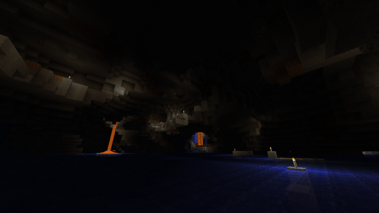
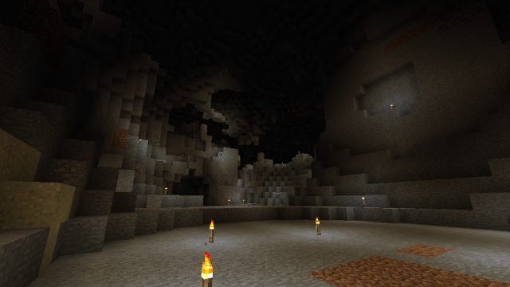
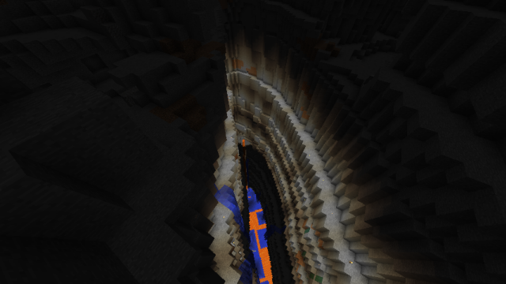
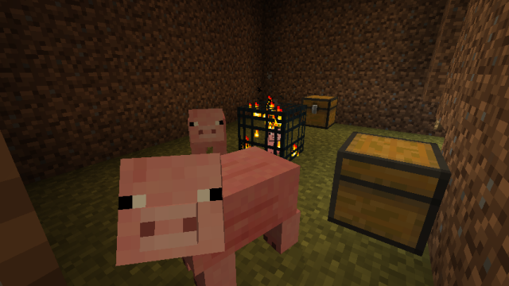

このMODの主軸となるメインディメンションになります。
オーバーワールドより広い洞窟が、最下層から最上層まで万遍なく生成されます。
最上層と最下層に存在し、オーバーワールドのように凸凹ではなく、平面1層で構成されています。
コンフィグでユーザーが自由に設定できます。
専用のカスタマイズGUIが用意されていて、テキストエディタを使わずに簡単に編集することができます。
デフォルトの設定もコンフィグを参照してください。
ゾンビやスケルトンをはじめとしたおなじみのモンスターに加えて、クリーパーやエンダーマンなどがスポーンするダンジョンも生成されます。
Caveworldでもベッドで眠ることができます。
眠っても時間が進んで朝にはなりませんが、そこがCaveworldのリスポーン地点として設定されます。
セーブポイントのような役目を果たします。
Caveworldでベッドを使用するには、以下の条件を全て満たしている必要があります。
洞窟だけが生成されるディメンションです。
峡谷や廃坑、スポナーダンジョンなどは生成されません。
それ以外の仕様は、Caveworldと同様です。
水没した洞窟が生成されるディメンションです。
Cavernと同様に、峡谷や廃坑、スポナーダンジョンなどは生成されません。
それ以外の仕様は、Caveworldと同様です。
空洞は全て水で構成された広大な洞窟が生成されます。
炭鉱夫ランクが、アクアマリン掘り / Aqua Miner 以上の場合、Aqua Cavernで活動しやすくなります。
水中にいる際にも、視界が良くなり、地上と変わらないくらいの速度で歩けるようになります。
地上のような洞窟が生成されるディメンションです。
霧が微かに発生し、幻想的な空間が広がります。
このディメンションのバイオームや鉱脈は、コンフィグでカスタマイズすることができません。
地上でのバイオームの構成ブロックが適用された洞窟が生成されます。
多くのバイオームでは草と土で、砂漠バイオームでは砂と砂岩で構成された洞窟が生成されます。
鉱石はほとんど生成されることはありません。
草花、変質した木や、砂漠の洞窟ではサボテンが自生します。
異質な雰囲気の漂う、ボスレイドのためのディメンションです。
生成時にクレイジーボスモンスターがスポーンします。
このディメンションでは、死亡してもアイテムをその場にドロップせず、復活後に保持したままになります。
このディメンションのバイオームや鉱脈は、コンフィグでカスタマイズすることができません。
広さが制限された大洞窟が生成されます。
ランダマイト鉱石のみが生成されます。
このディメンションでは、ランダマイト鉱石を採掘した際に、ステータスエフェクトを得やすくなっています。
マスターケイブニックスケルトンが変異した、非常に凶悪なボスモンスターです。
体力も非常に多く、体力が減るほど攻撃パターンが増えて、厄介になっていきます。
それぞれの洞窟ディメンションへは、専用のポータルを作成し、それを介して行き来します。
ポータルブロックを右クリックすると、簡単にカスタマイズや再生成などにアクセスできるメニューを開けます。
エンダーチェストを素材に作成するCaveworld ポータルにのみ備わるインベントリです。
メニューからポータルインベントリをクリックすることで開くことができ、他のCaveworld ポータルと中身を共有します。
MCEconomy 2を導入していると利用できる機能です。
ツルハシを持ってポータルブロックを右クリックすると開けます。
ショップの製品や価格はコンフィグからユーザーが自由に設定できます。
洞窟ディメンションに生成される、特殊な構造物です。
これらは、個別にコンフィグで生成の可否をディメンションごとに設定できます。
深層に生成される洞窟です。
最深層部には、広大な地下湖が生成されます。

高度150以上に生成される過激な洞窟です。
複雑に入り乱れた洞窟が果てしなく生成されます。
通常の洞窟とは比べ物にならないほど規模の大きいものも多く見られます。

最下層から最上層まで抉るように生成され、とても高く巨大な峡谷です。
あまり多く生成されることはない希少な峡谷です。

動物がスポーンするスポナーブロックが設置されたダンジョンです。
